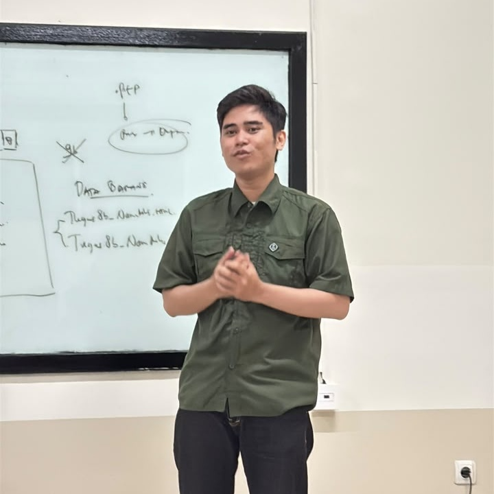
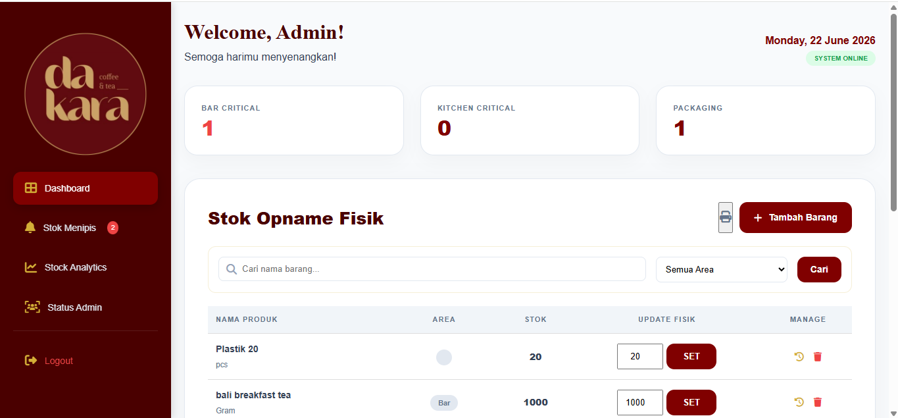
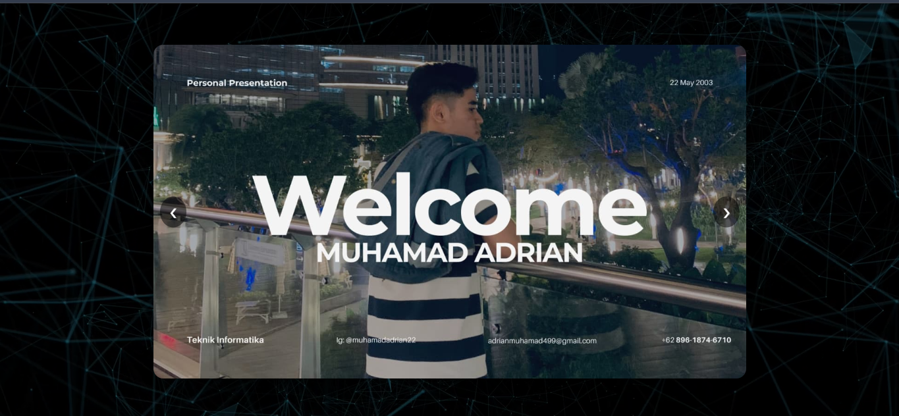
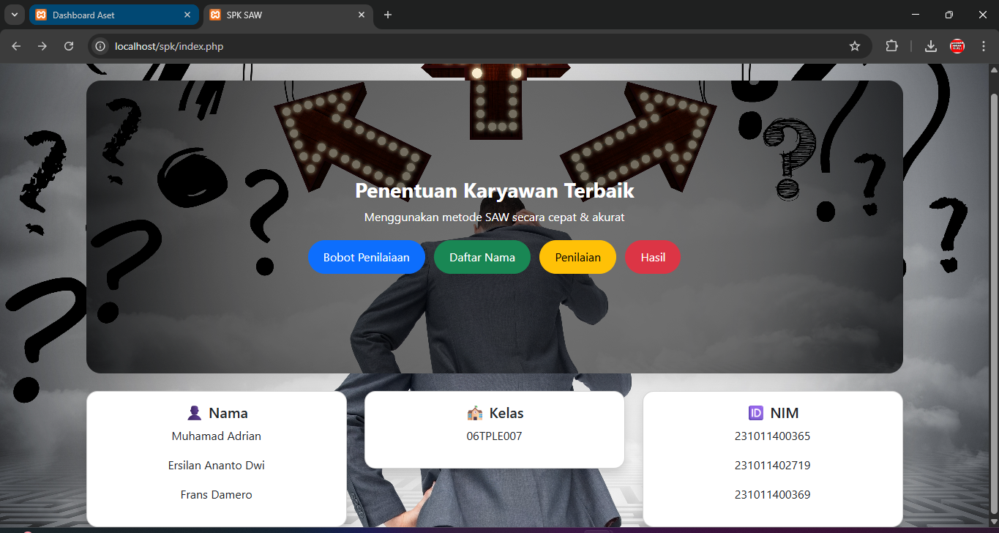
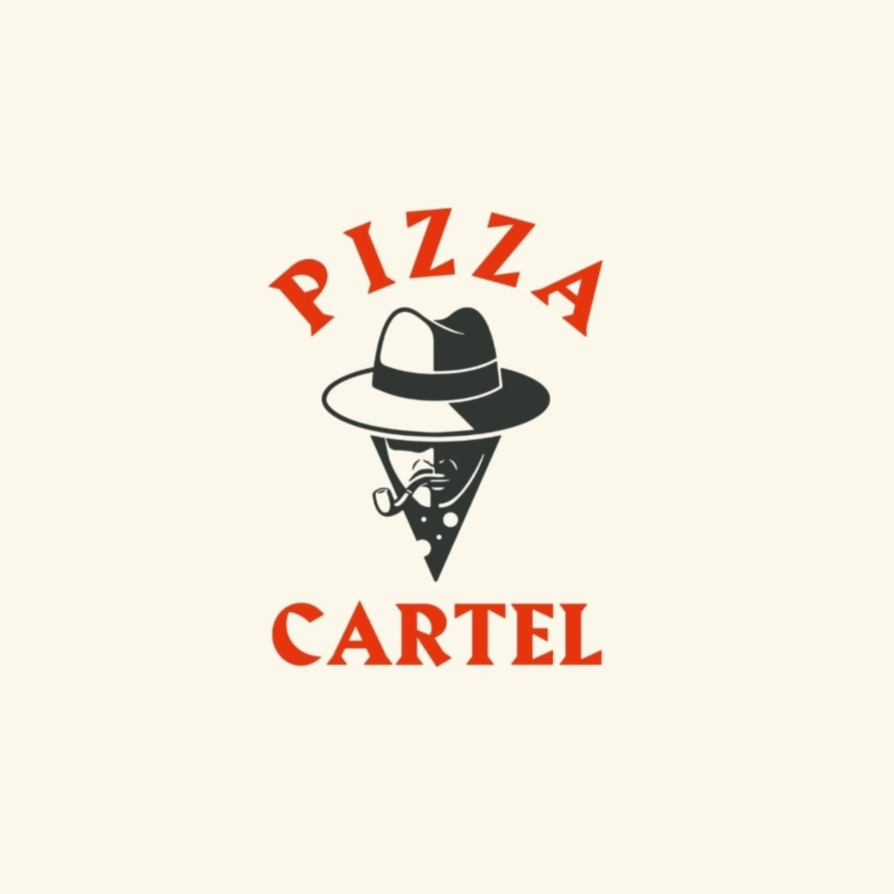
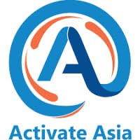
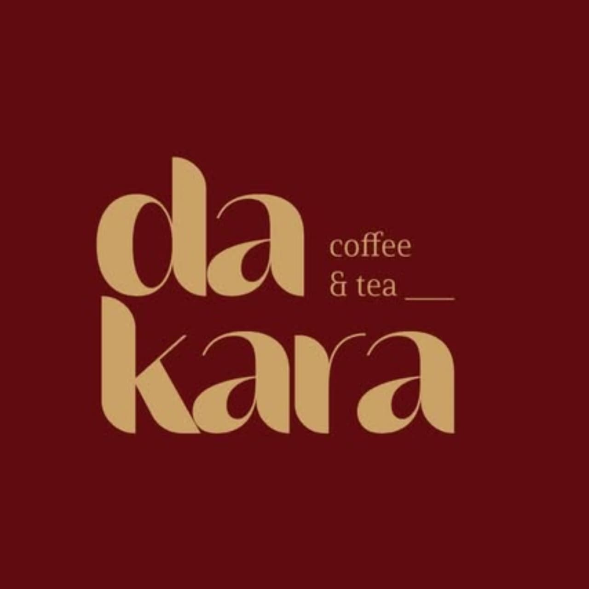

Universitas Pamulang
Teknik Informatika

Halo, saya
Saya seorang Mahasiswa Teknik Informatika
Lulusan SMA yang kuat di bidang Teknologi Informasi. Berpengalaman di industri F&B dan event yang mengasah kemampuan kerja tim, komunikasi, dan adaptasi. Saat ini sedang menempuh studi Teknik Informatika di Universitas Pamulang dan berkeinginan bekerja di bidang IT.
Mahasiswa Teknik Informatika Universitas Pamulang (2023 – sekarang) yang berfokus pada pengembangan web dan sistem informasi. Terbiasa membangun aplikasi berbasis PHP dan MySQL dengan antarmuka HTML, CSS, dan JavaScript. Pengalaman di industri F&B dan event melatih kerja tim, komunikasi, ketelitian, serta ketahanan menghadapi target dan deadline. Berkeinginan berkarier di bidang IT dan terbuka untuk kesempatan magang atau posisi entry-level.
Teknik Informatika
Ilmu Pengetahuan Sosial

Saya membuat aplikasi inventory ini untuk mengatasi permasalahan stok barang di sebuah coffee shop.

Saya membuat website ini untuk tugas pengabdian kepada masyarakat di kampus saya.

Saya membuat website pribadi ini untuk mengasah dan memperdalam ilmu pemrograman saya.

Sistem pendukung keputusan berbasis kriteria untuk membantu menentukan karyawan terbaik secara objektif.



Tertarik bekerja sama? Hubungi saya lewat: